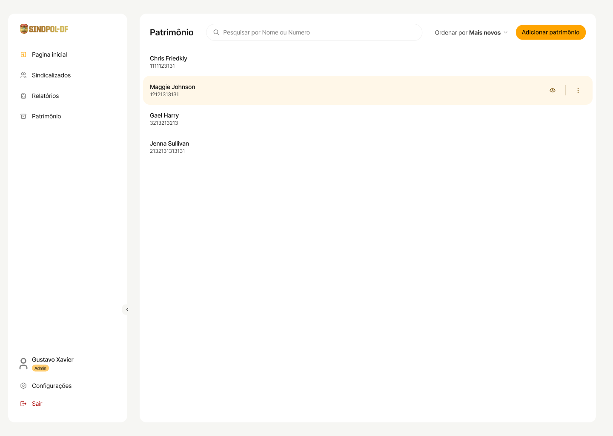

Protótipo de Alta Fidelidade
1. Introdução
O protótipo de alta fidelidade é uma ferramenta essencial no processo de desenvolvimento de um projeto de software, que desempenha um papel crucial na transformação de conceitos e ideias em uma representação visual concreta e funcional da futura aplicação.
Um protótipo de alta fidelidade é, de fato, a representação mais próxima possível do produto final. Ele vai muito além de simples esboços ou wireframes, incorporando elementos gráficos, layouts detalhados, interações de usuário e até mesmo funcionalidades específicas. Essa riqueza de detalhes permite que os desenvolvedores e stakeholders tenham uma visão clara e tangível do que a aplicação será no final do processo de desenvolvimento.
Tendo em vista esse conceito foi preparado várias telas que correspondem às funcionalidades da aplicação. Sendo passíveis de alterações e mudanças os protótipos são uma importante ferramenta para incorporação de valor para o cliente.
2. Telas
O processo de prototipação foi feito com base no guia de estilo sendo esse uma parte fundamental para padronização das páginas fornecendo diretrizes específicas de design, estrutura e elementos visuais. Isso assegura que todas as telas e funcionalidades da aplicação sigam um conjunto de regras e estilos coesos, garantindo uma experiência consistente e profissional para os usuários finais.
Além disso, ao seguir o guia de estilo, a equipe de desenvolvimento pode trabalhar de forma mais eficiente, economizando tempo e esforço na criação e manutenção das telas, uma vez que as diretrizes já foram estabelecidas. Isso resulta em um produto mais consistente e de alta qualidade, atendendo às expectativas do SINDPOL e proporcionando uma experiência superior para os usuários.
Para saber mais sobre as diretrizes de estilo, consulte o Guia de estilo.
Para acessar o protótipo de alta fidelidade navegável clique aqui.
2.1 Login

2.2 Formulário de filiação
2.3 Recuperação de senha
Após o envio do e-mail de recuperação de senha
2.4 Dashboard de sindicalizado

2.5 Gerar documentos

Selecionado

2.6 Importar sindicalizados

Processando
2.7 Dashboard Gestor

2.8 Listar sindicalizados

2.9 Aceitar sindicalizado

2.10 Cadastrar sindicalizado

2.11 Cadastrar Pensionista
2.12 Listar patrimônios

2.13 Cadastrar patrimônio

2.14 Cadastrar patrimônio doação

2.15 Visualizar/editar patrimônio
2.16 Listar relatórios
2.17 Emitir relatório

2.18 Formulário de desfiliação
3. Histórico de Revisão
| Data | Versão | Modificação | Autor |
|---|---|---|---|
| 19/10/2023 | 0.1 | Criação do documento | Mateus Moreira |
| 11/12/2023 | 1.0 | Atalização dos protótipos | Carlos Eduardo |